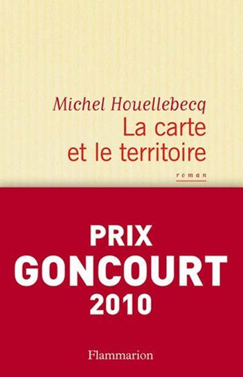
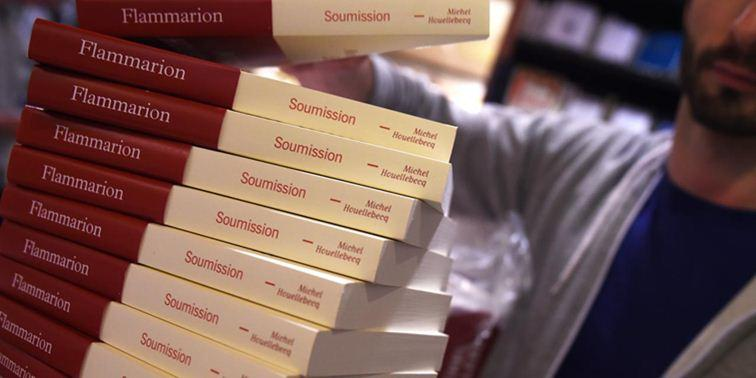
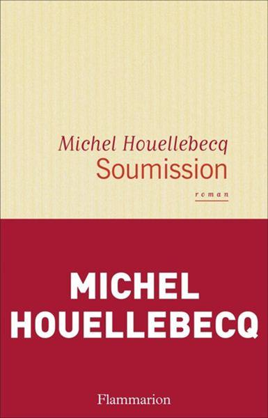

Michel Houellebecq est traduit dans le monde entier, il est un des écrivains français contemporains parmi les plus lus. Le regard qu’il porte sur l’existence au travers de ses livres est plutôt un regard pessimiste, un écœurement profond du genre humain. Ses thèmes de prédilection se concentrent sur la contingence de l’existence et le sexe. Ses ouvrages principaux sont « Extension du domaine de la lutte », (1994) l’ouvrage qui l’a révélé au grand public et qui fut suivi par « Les particules élémentaires » (1998). Ce dernier ouvrage était escompté pour le Prix Goncourt, mais il ne l’obtint pas.
Il y eut ensuite « Plateforme » (2001) qui connut un beau succès, et qui est certainement le roman le plus sentimental de Houellebecq. Mais la consécration véritable viendra cinq ans après avoir publié « La possibilité d’une île » (2005) qui est peut-être le plus mauvais de ses romans à succès. La consécration viendra donc avec « La carte et le territoire » (éditions Flammarion) pour lequel il a obtenu le Prix Goncourt 2010. L’ouvrage dépasse les quatre cents pages et se dévore presque d’un trait. En 2015 il fit paraître « Soumission » (éd. Flammarion) dont il suspendit la promotion, suite aux attentats islamistes de Paris. C’est de ces deux derniers ouvrages que je parlerai.
Curieusement, en quatrième de couverture de La carte et le territoire figure la photo de l’écrivain en format identité.
Ce dernier apparait amaigri, le buste en retrait, avec un rien, un petit quelque chose dans la posture rappelant Camus.
Comme dans La possibilité d’une île ou Les particules élémentaires le personnage principal est dédoublé. Dans Les particules... il y avait des jumeaux, dans La possibilité... des clones, ici il s’agirait plutôt de binôme : les deux personnages travaillent ensemble, se ressemblent étrangement et ne sont pas du tout l’antithèse l’un de l’autre, tous deux sont des artistes solitaires. Le regard dégagé et pessimiste avec lequel ils regardent le monde est identique pour l’artiste peintre et l’écrivain.
Contrairement aux romans précédents, il n’y a pas de « schize » entre la pensée des deux hommes, leur mode de vie et leurs goûts sont identiques. L’un d’eux est Jed Martin, le héros à part entière du roman, peintre de son état sa vie d’artiste, devient célèbre et vend très cher ses tableaux. Le second n’est autre que Michel Houellebecq lui-même, célèbre écrivain et bien réel sur le marché de l’édition. Il rencontrera Jed, lors d’un échange de service : Houellebecq écrira une brochure pour un vernissage de Jed et ce dernier fera un portrait de l’écrivain et le lui offrira. Ce portrait coûtera bientôt une fortune. Après avoir planté le décor de la vie parisienne et des peoples qui la composent, l’histoire débutera réellement dans la troisième et dernière partie du livre.
Mais bien mieux que l’histoire, ce qui est intéressant dans cet ouvrage, ce sont les descriptions que fait Houellebecq de ses personnages. Une indulgence pour le genre humain, qui lui était inconnue à ce jour, perce à travers les différents individus qui interviennent tour à tour dans le roman.
Aussi bien les hommes que les femmes. Chaque personne mise en acte a quelque chose d’humain, une certaine bonhomie en elle, même si cette bonhomie est loin d’être de l’humanisme correct :
« L’existence des hommes s’organisait autour du travail, qui occupait la plus grande partie de la vie, et s’accomplissait dans des organisations de dimension variable. À l’issue des années de travail s’ouvrait une période plus brève marquée par le développement de différentes pathologies. » p.105
Si Houellebecq, dans ses écrits antérieurs, a toujours soutenu l’idée que passé trente ans une femme n’est plus baisable, son point de vue n’est plus le même :
Les seins siliconés sont ridicules lorsque le visage de la femme est atrocement ridé, lorsque le reste de son corps est dégradé, adipeux et flasque ; mais tel n’était pas le cas d’Hélène, loin de là. Son corps était demeuré mince, ses fesses fermes, à peine tombantes [...] en somme c’était une très belle femme. » p.329
L'auteur parle là d’une femme qui va bientôt prendre sa retraite ! Ibidem quand Jed, le héros, flatte le cul de sa compagne du moment qui a passé la quarantaine : il trouve que ce cul est beau et que cette femme de quarante ans est jolie. (p.249) Même si Jed ne peut plus l’aimer ; il ne s’agit plus d’érotisme. Que les amateurs de Houellebecq se rassurent, le regard posé sur l’existence conserve le même pessimisme réaliste :
« C’est sans doute par compassion qu’on suppose chez les personnes âgées une gourmandise particulièrement vive, parce qu’on souhaite se persuader qu’il reste au moins ça, alors que dans la plupart des cas les jouissances gustatives s’éteignent irrémédiablement, comme tout le reste. Demeurent les troubles digestifs et le cancer de la prostate. » p. 24
Ses formules décrivant notre société en caricaturant les peoples restent incisives, comiques et glaciales ; froides comme l’acier du scalpel et fleuries comme un cerisier au printemps : « ...tourna vers Jed un regard intrigué, avant d’être happé par une actrice porno people qui venait de publier un livre d’entretiens avec un religieux tibétain. » p.74
L’auteur ne se gêne pas pour dire ce qu’il pense de l’art qu’il aime ou de celui qu’il déteste. Ses jugements tombent toujours comme un couperet, sans appel possible, la sentence est déjà exécutée :
« Le portrait de Dora Maar par Picasso qu’est-ce qu’on en a à foutre ? De toute façon Picasso c’est laid, il peint un monde hideusement déformé parce que son âme est hideuse, et c’est tout ce qu’on peut trouver à dire de Picasso , il n’y a aucune raison de favoriser davantage l’exhibition de ses toiles, il n’a rien à apporter, il n’y a chez lui aucune lumière, aucune innovation dans l’organisation des couleurs ou des formes, enfin il n’y a rien chez Picasso absolument rien qui mérite d’être signalé, juste une stupidité extrême et un barbouillage priapique qui peut séduire certains sexagénaires au compte en banque élevé. » p.176
Si les artistes célèbres sont revisités, les philosophes ne sont pas oubliés :
« Et toutes les théories de la liberté, de Gide à Sartre, ne sont que des immoralismes conçus par des célibataires irresponsables. » p.179
Comme indiquée dans les quelques phrases citées, la provocation n’est pas absente du roman, mais elle manque de percussion, de force brutale. On a l’impression, en regard des autres ouvrages de l’auteur, de lire un Houellebecq au cynisme et à l’ironie édulcorés. Cynisme sec et ironie cinglante auxquels il nous avait habitués et qui font son charme brut. On a l’impression de lire un Houellebecq « light », en vue peut-être d’un prix littéraire ?
Un Houellebecq moins grossier, moins cassant mais également moins percutant. On sent le collage de notes prises au jour le jour, le roman construit patiemment l’emporte sur le verbe éjaculé. Le cri de dégoût et le rictus d’ironie ont perdu de leur force, et de ce fait la pénétration du lecteur est plus lente. La surprise ne fait pas son effet, même quand l’écrivain place des peoples appartenant aux médias dans des situations embarrassantes et leur fait tenir des propos avinés.
La poésie est présente, comme toujours, presque cachée naturellement au détour des phrases :
« Un peu avant d’atteindre Orléans, il prit la E60 en direction de Courtenay. Quelques centimètres en dessous de la surface du sol, des graines attendaient la germination, l’éveil. » p.253
La troisième partie de l’ouvrage contient le côté « polar » du bouquin. Là, si le crime vaut une bonne série noire, l’auteur ne s’est pas cassé la tête pour la liste des patronymes des policiers, on les croirait sortis d’un catalogue des noms vieille France ou d’une série télé des années soixante : Jasselin, Ferber, Lartigues, Messier... Le héros, Jed, encore présent cède discrètement la place à Josselin, le commissaire chargé de l’enquête. Le flic brillant qui donne des cours dans une école de police est entré dans la police par raisonnement philosophique :
« La peur du gendarme, avait-il fini par comprendre, était décidément la vraie base de la société humaine, et c’est en quelque sorte tout naturellement qu’il s’était inscrit au concours externe de commissaire de police ».p.294
La femme de Josselin est enseignante en économie et l’auteur nous régale de sa description du métier :
« Sa vie professionnelle pouvait en somme se résumer au fait d’enseigner des absurdités contradictoires à des crétins arrivistes... » p.328
Quelle que soit la page, du début à la fin, les petites vérités philosophiques, ces vérités orphelines de la philosophie, comme il y a des maladies orphelines, se dévoilent sous la plume réfléchie de l’auteur :
« La fortune ne rend heureux que ceux qui ont toujours connu une certaine aisance, qui y sont depuis leur enfance préparés ; lorsqu’elle s’abat sur quelqu’un qui a connu des débuts difficiles, le premier sentiment qui l’envahit, qu’il parvient parfois temporairement à combattre, avant qu’à la fin il ne revienne le submerger tout entier, c’est tout simplement la peur. » p.396
La lucidité politique de l’écrivain reste entière, là aussi sans appel, la réalité n’a pas d’instance supérieure : « ...que le capitalisme était condamné, et même condamné à brève échéance, qu’il vivait ses toutes dernières années, sans que pourtant les partis d’ultra-gauche ne parviennent à séduire au-delà de leur clientèle habituelle de masochistes hargneux » p. 397
Il n'est pas sûr que le capitalisme soit condamné à brève échéance. Il y a de longues agonies. Mais l'ultra-gauche, elle, est certainement finie, ses compromissions furent trop nombreuses.
En conclusion, le roman est tout à fait lisible, l’auteur semble gagner, non en optimisme devant l’existence, mais par un accommodement douillet vers un certain confort, puisqu’il n’y a pas d’autre issue possible pour l’homme. Et il faut peut-être aussi le dire, les pulsions faiblissent avec le temps, même la pulsion de mort, contrairement aux apparences. Certains signes posés ça et là en guise de balise, laissent à penser que le prochain roman de Houellebecq pourrait être un roman religieux ou mystique. Ce qui fut presque le cas...
Soumission
« Le vingt et unième siècle sera religieux ou ne sera pas. » Ces propos ont été attribué à André Malraux.
Dans Soumission, Houellebecq illustre par un roman la célèbre phrase de l’ex-ministre de la Culture du Général de Gaulle. L’ouvrage fit scandale avant même sa sortie en librairie. Ce qui est mis en avant dans le livre est le contexte politique dans lequel se déroule l’histoire : les élections présidentielles de 2022 et la victoire de Mohammed Ben Abbes, le candidat de la Fraternité musulmane face à Marine le Pen. Il n’en fallait pas plus pour que la bienpensance imbécile hurle à l’islamophobie et ressorte la litanie des accusations habituelles dès que l’Islam est abordé.
L’auteur déroule son action après avoir procédé à une analyse sociologique de la société française en 2022, il reprend, pour le promouvoir, le même personnel politique. La projection est aisée car l’époque est peu éloignée de la nôtre. L’évolution des technologies est par contre passée à la trappe, ce qui est surprenant de la part de l’auteur de La possibilité d’une île.
S’il se déroule dans un futur proche, l’ouvrage est d’abord un roman avec des personnages houellebéquiens, dont le héros principal est, comme toujours chez l’auteur, un homme plus ou moins las et blasé de l’existence : un baiseur triste et fatigué, sans but et sans ambition.
C’était le cas des premiers héros de Houellebecq, ceux de Plateforme, des Particules élémentaires ou d’Extension du domaine de la lutte. Les personnages des ouvrages qui suivirent se sont avérés avoir moins de consistance dans la désespérance que ceux auxquels l’auteur nous avait habitué.
Le personnage principal de Soumission, même s’il a une ressemblance avec les personnages classiques de Houellebecq, s’est toutefois affadi. Il a perdu de sa désespérance ordinaire, de son intensité dramatique en cherchant la foi comme compromis à l’absurdité de l’existence. C’est par intérêt égoïste et par opportunité que François, professeur d’université, se convertit à l’Islam, après avoir essayé en vain de trouver dans le catholicisme une solution à son mal de vivre. Il accomplit pour cela plusieurs retraites, hélas, la foi ne vient pas.
Mais on aurait tort de limiter la conversion de François à ses seules préoccupations financières et professionnelles, s’il a à y gagner, ce n’est tout de même pas sa motivation principale. Bien que sa conversion lui permette de garder son poste et d’avoir un meilleur salaire.
Dans le contexte de la France de 2022 où évolue François, l’Islam est bien plus présent que le catholicisme, plus visible, plus officiel. C’est la raison pour laquelle il finira par se convertir, sans véritable foi. C’est son supérieur hiérarchique, converti à l’Islam et prosélyte, qui sera son « mentor ». Le professeur Rediger réussira à le convaincre lors d’une longue discussion à l’issue de laquelle il lui donnera un opuscule dont il est l’auteur et intitulé « Dix questions sur l’Islam ».
Si le personnage a quitté l’intensité dramatique houellebéquienne, la prose de l’auteur a également faibli et le verbe n’a plus cette puissance qu’avaient les premiers écrits, mais les tournures et les expressions assénées brutalement restent tout de même un régal de fin gourmet : « Chacune de ses fellations aurait suffi à justifier la vie d’un homme. »
Sans préciosité inutile, les observations psychologiques criantes de vérité, arrivent abruptement, au détour d’un descriptif : « Alice posait sur nous ce regard à la fois affectueux et légèrement moqueur des femmes qui suivent une conversation entre hommes, cette chose curieuse qui semble toujours hésiter entre la pédérastie et le duel. »
Même si le jaillissement de Plateforme s’est estompé, il reste le talent, la pensée originale qui poussent à la réflexion hors des sentiers battus : « ...c’est pour des questions métaphysiques que les hommes se battent, certainement pas pour des points de croissance, ni pour le partage des territoires de chasse. »
Loin d’être un brûlot anti-islam ni en faire l’apologie, Soumission s’apparente plus à une explication sociologique raisonnée, à une démonstration logique illustrant que l’Islam s’avère la doctrine la plus adaptée à la nature égoïste de l’homme. L’ouvrage invite à une réflexion sur la religion du prophète sans concession ni parti pris. L’environnement aidant, cette réflexion débouchant sur la conversion, sera évidemment plus facile pour les hommes que pour les femmes.
Mais il n’empêche, tant l’écrit est réaliste, qu’on s’interroge sur la conduite à tenir dans un futur proche et inévitable : s’engager dans une collaboration douce, entrer en résistance dans un sursaut patriotique désespéré ou se laisser glisser dans un aquabonisme existentiel ? On referme le livre avec une grande sensation de malaise, c’est donc réussi !


Partager cette page